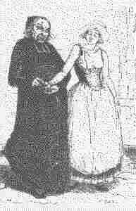

Azenorig C'hlaz
Ton
I
1. Azenorig c'hlaz a zo dime'et,
Ne d'eo ket d'he muiañ karet, O
Ne d'eo ket d'he muiañ karet
2. Azenorig c'hlaz a zo dime'et,,
D'he dousig kloareg ne d'eo ket,o
D'he dousig kloareg ne d'eo ket
II
3. 'Zenorig oa 'tal ar feunteun
Ha ganti ur vrozh seiz melen
4. War lez ar feunteun, hec'h-unan,
O pakat eno bleuñv balan,
5. Da ober ur bokedig koant
Ur boked da gloareg Mezlean
6. Bout e oa-hi 'tal ar feunteun
Pa dremenas an Aotrou Youenn
7. 'N Aotrou Youenn, war e varc'h glas
Kerkent, en ur redadenn vras
8. Kerkent, en ur redadenn vras
Hag outi damsellet a reas:
9. - Houmañ a vezo ma fried
Pe n'am bo, 'vit gwir, gwreg ebet ! -
III
10. Kloareg Mezlean a lare
Da dud e vaner, un deiz oe :
11. - Pelec'h eus ur c'hemengader
Ma skrivfen d'am dous ul lizher ?
12. - Kemengaderien vo kavet
Hogen e vint re ziwezhat. -
13. - Va matezhig, din lavarit,
Na petra zo amañ skrivet?
14. - Azenor, me na ouzon ket,
Biskoazh e skol ne on-me bet.
15. - Azenor, me na ouzon ket,
Digoret-hen, hag e welfet. -
16. Pe oa lakaet war he barlenn
'Zenorig a zeuas d'he lenn
17. Ne oa ket evit he lenn mat,
Gant daeroù eus he daoulagad
18. - Ma lavar gwir al lizher-mañ
'Mañ-eñ tost da vervel bremañ ! -
IV
19. Ne oa ket he c'homz peuzlaret
Pe d'al leur-zi oa diskennet
20. - Petra nevez zo en ti-mañ
Pa welan 'n daou ver ouzh an tan.
21. Pa welan 'n daou ver ouzh an tan
'N hini bras ha 'n hini bihan?
22. Petra nevez zo en ti-mañ
Pa erru sonerien amañ ?
23. Pa erru sonerien amañ
Ha pajigoù a Germorvan?
24. - En ti-mañ n'eus netra henoz.
Nemet ho eured zo arc'hoazh.
-
25. - Mar d'eo 'benn arc'hoazh va eured
Mont a rin abred da gousked.
26. Hag ac'hano ne savin ket
Ken da lienañ vin savet.
27. 'Tronoz beure pa zihunas
He matezhig-gambr erruas
28. He matezhig-gambr erruas
Hag er prenestr en em lakaas:
29. - Me wel an hent, ha poultrenn ennañ,
Gant kalz roñsed o tont amañ :
30. An Aotrou Youenn 'penn-kentañ,
Ra vo torret e c'houg gantañ ! -
31. D'e heul, ha flec'h ha marc'heien
Ha kalz tudjentil 'hed an hent,
32. Ha dindanañ 'n inkane gwenn
Ur stern aouret war he gerc'henn
33. Ur stern alaouret penn-da-benn,
Un dipr voulous ruz war he gein.
34. - Mallozh d'an eur e teu amañ !
D'am zad, d'am mamm, ar re gentañ !
35. Difennet eo d'an dud yaouank
Da heuliañ, er bed-mañ, o c'hoant. -
V
36. Azenorig-c'hlas a ouele
O vont d'an iliz an deiz-se
37. Azenorig a c'houlenn
A-biou Mezlean pa dremene :
|

38. - Va fried, mar plij ganeoc'h-c'hwi
Me 'yel un tammig tre an ti
39. - Evit feteiz na yefec'h ket ;
Arc'hoazh e yefec'h, mar karit. -
40. Azenorig druz a ouele
Ne gave den he frealze
41. Ne gave den he frealze
'Met he matezhig, hi a rae :
42. - Tavit, itron, na ouelit ket,
Gant Doue viot digollet. -
43. Azenorig c'hlas a ouele
E-tal an aoter, da greizteiz
44. Adal 'n aoter bet' an nor sal
Oa klevet he c'halon strakal
45. - Tostait, va merc'h, em c'hichen
Lakfen war ho piz ar walenn.
46. - Poan zo ganin tostaat amañ
Pa n'am eus an hini 'garan
47. - Azenorig, pec'hiñ a rit
Un den a-feson ho-peus bet
48. Perc'henn en arc'hant hag en aour
Ha kloareg Mezlean a zo paour.
49. - Pa ven gantañ o klask ma boued,
Se na ra tra da zen ebet ! -
VI
50. Azenorig a c'houlennas
E Kermorvan pa zegouezas :
51. - Va mamm-gaer, din-me lavarit
Pelec'h emañ ma gwele graet
52. - Bout 'mañ tal kambr ar marc'heg-du ;
Me ya d'hen diskouez deoc'h diouzhtu. -
53. War he daoulin 'n em strinkas krenn
Dispalafet he blev melen
54. War an douar, gant gwir enkrez :
- Ma Doue ! Bezet ouzhin truez ! -
VII
55. - Va mamm itron, ha me ho ped,
Pelec'h emañ aet va fried ?
56. - Er gambr d'an nec'h emañ kousket
Aet-hu di hag he frealzit"
57. Pa zeuas tre kambr he hini :
- Eurvat deoc'h, intañv", emezi .
58. - Itron Varia hag an Drinded !
Evit intañv am c'hemerit ?
59. - 'Vit intañv n'ho kemeran ket,
Hogen e berrig e viet
60. Setu amañ brozh ma eured,
A dalv, a gredan, tregont skoed.
61. Houmañ vo d'ar vatezh vihan
He deus bet ganin kalzig poan
62. A zouge lizherioù kollet...
A Vezlean d'hon zi, va fried.
63. Setu ur vantell nevez-flamm
Zo bet brodet din gant va mamm:
64. Houmañ vo roet d'ar veleien
Da bediñ Doue 'vidon-me
65. 'Vit va c'hroaz ha va chapeled
Ar re-se zo deoc'h, ma fried:
66. Mirit o mat, ha me ho ped,
Ma zalfec'h soñj eus ho eured. -
VIII
67. - Petra zo degou'et er gêr-mañ
Pa son ar gloc'h war e gostez ?
68. - Azenor mervel he-deus graet
He fenn war barlenn he fried. -
69. Maner Henan, war un daol grenn,
Emañ bet skrivet ar werzh-mañ
70. Maner Henan, 'tal Pont-Aven,
Da vout kanet da virviken.
71. Barzh an Aotrou kozh he savas
Hag un dimezell he skrivas.
|
Variantes tirées du premier carnet de collecte de La Villemarqué

p. 74
Première version (A + variantes C, D, E)
Renig Ar C'hlaz
(1) (A) Renig Ar C'hlaz zo dimezet,
(D) Hogen pa d'he vuia-karet.
(A) N'eo ket he fantazi e-neus bet, O
(2) He dous kloarek en-deus ket bet,
Difenn 'neus bet he dousig kloarek, O.
(11) - Me a garfe kavoud ur mesañjourier
Hag e scrivfe din-me ul lizher.
(11) (c) Me a garfe ur c'hemengader
Da goût di yan ma dousik d'ar ger.
(62) E tougfe al li(zhe)rioù kollet
Etre bourc'h Melzran ha maner Penret.
(12) (A) - Mesañjourien awalc'h vo kavet,
Mez non-pa re zeskouet, O
(19) (C) Antronoz ar mintin pa save
D'he mamm, d'he zat e c'houlene:
(13.1) - Petra e li'zh)er-mañ skrivet
(15.2)- Digorit hen hag e gelfet.
(13) (A)- Matezhig vihan, din lavarit,
Petra zo el li(zh)er-mañ laket?
(15) - Renig Ar C'hlaz he n'ouzhon ket.
Digorit hen hag a gwelfet. -
(16) Pa voa laket de(zh)i war he barlenn,
Renig Ar C'hlaz komañs da lenn, O.
p. 83
(18) - Mar eo gwir a lar al li(zh)er-mañ,
'Ma he c'horf war ur vazh-skañv bremañ, O
(c) Laromp: "Doue pardono d'an anaon!".
(20.1) (A)- Petra zo en ti-mañ fenoz,
(21.2) Ha pe ma bir bihan an hini braz? O
(24) - Barzh an ti-mañ 'neus netra fenoz,
Nemed ho eured zo benn warc'hoazh.
(25) - Mar ma va eured benn warc'hoazh
Me yei da gousked abred fenoz, O.
(26) Ma sa(v)en mintin mat warc'hoazh
Evit gwiskañ va koefoù, va dilhad. -
(28.1) Pa oa Renig Ar C'hlaz prenestr he c'hambr studi,
(29.1) Hi wel en hent triboultr treañiñ, O
(29.2) Gand ar roñsed o tont d'he zi.
(29) (C) - Me wel an hent Melzran o poultrein
(30.1) Ivonik Selar a penn-kentañ.
(31.2) Gant an dudjentiled o tont tre-amañ
(31) Gantañ zo flec'h ha baronoù
Ha kalz tudjentil eus ar vro.
(32) (E) Gantañ zo ur pikol marc'h wenn
Ur stern alaouret en e gerc'henn.
(33.1) Ur stern alaouret penn-da-benn
Ur c'hapez arc'hant en e benn,
(33.2) Un dibr brodet seiz war e c'hein.
|
(34) Va malloz a pedan gantañ!
Gant va mamm, va zat ha re gentañ
(35) Ha kement a vak an tud yaouank
Difenn a lezent kemer o c'hoant
(34) (A)- Va malloz d'an eured, pe da
Va zat, va mamm, ar re gentañ! O
(35) Difennet o-deus d'o zud yaouank
Da gemer ar fantazi, holl gontantamant.
(X) - Dibonjour-ta, tud an ti-mañ,
Mar eo me ar merc'h-kaer en ti-mañ,
p. 84
- N'eo ket c'hwi ar merc'h-kaer en ti-mañ
Pa n'eoc'h ket deuet war roñsed amañ.
- Me garfe boud deuet gant va volontez vat
Eged boud me deuet war va daoudroad.
(51) - O, va mamm gaer din lavarit
Pelec'h ma un gwele amañ da gousked?
(C) Ivonik Selar a goulene
Gant he vamm, he tad d'an devez-se:
(56) (A) - Ema en he c'hambr a studi,
Renig Ar C'hlaz, ait-hu d(ezh)i.
(55) - Va mammig paour, din lavarit
Renig Ar C'hlaz, pelec'h eo aet?
(56) - Ema en he c'hambr da studi
Vonig Salaru, eit d'he konsoliñ!
(56.2) (D) Eit da wel mar he konfortfec'h
Prest eo he c'halonik da varked.
(C) Du-se e... ema deuet
Prest eo he c'halonik da vankiñ.
(57) Ha pa oa antreet barzh ar gambr:
- Diboñjour deoc'h, intañv yaouank!
(58) - Renig Ar Glas, em exkuzit!
Mar da lec'h intañv em kemerit?
(59) (A) - Lec'h un intañv n'ho kemeran ket,
Mez e berrig amzer vihot lakaet. -
(67) - Petra zo degouet er ger-mañ,
Pa son ar c'hleier war ar goste?
(68) - Renig Ar C'hlaz zo desedet
'N ur souchañ he fenn war barlenn he fried.
(68) (D) Mervel neus graet
He fenn war barlenn he fried.
(60) (C) - Me m'eus aze broz...
Hag a kost ar som a...
(A) - Setu 'ma va kotilhon va eured,
Ma somm ane{zh)i a bemp kant skoed, O
(65) Homañ, a vo roet d'eoc'h-hu, va fried,
Evit ar mizoù ho-peus-hu bet.
(63) Setu ma amañ tavañcher va eured
Ma som an'(ezh)an a tri kant skoed, O
(64) Hemañ vo roet d'ar veleien
Evit pediñ Doue vidon-me,
(60) Setu 'ma ar manchou va eured
'Ma som anezhan daoukant skoed. O
|
(61) (A) Hemañ vo roet d'ar vatezhig vihan
Pehini 'neus bet ganin kalzig poan,
(62.2) Kreiz-tre maner Drevin ha bourc'h Landevant.
P. 74
Deuxième version (B)
(1) (B) Renig Ar C'hlaz zo dimezet
N'eo ket dimezet d'he vuiañ karet
Renig Ar C'hlaz a lavare
D'he zat ha d'he mamm en devezh-se:
(20.1) - Petra zo e-nevez en ti-mañ?
Petra zo e-nevez en ti-mañ,
(21) P' ema er pod braz
An hin' braz hag hini bihan?
(22) Petra zo nevez en ti-mañ
P'erruas sonerien amañ
(23.2) Hag ar pajigoù Kermorvan?
(24) (C) - N'eus netra en ti-mañ fenoz
Med ho eured a zo benn warc'hoazh.
(25) - Mar ma va eured benn warc'hoazh
Me ya da gouked abred fenoz.
(B) - Renig Ar C'hlaz c'hwi n'ouzoc'h ket?
(29.2) Warc'hoazh kentañ 'ma ho eured.
(25) - Mar warc'hoazh kentañ 'ma va eured
Me yelo a-bremañ da gousked,
(26) Evit savein warc'hoazh mitin mad
(Y) Evit gwiskiñ va dilhat.
Evit lakaad an habit nevez
'Vit mond da Kermorvan da vale. -
Barzh di Kermorvan pa voa degouet:
- Deboñjour a joa, eñ lavare.
Deboñjour ha joa, tud an ti-mañ,
Kerkoulz ar re braz ha re bihan.
Mar me eo m'ar merc'h-kaer en ti-mañ.
- Evit merc'h-kaer en ti-mañ n'oc'h ket,
Pa n'oc'h ket e karos karret.
- Kezeg awalc'h zo en ar marchosi
Evit lakaad brañkar dindan tri. -
(28) Renig Ar C'hlaz a lavare
E prenestre he kambr hag an deiz-se:
(29) - Me wel erru kompagnonez
Hag hini tremen Koad-an-Enez,
(30) Ivonik Selin en penn kentañ
Ra vezo torret e c'hou(z)oug gantañ!
P. 85
(56) (D) ... ema d'an nec'h
Eit da wel mar he konfortfec'h:
Prest eo he c'halonik da vanked.
(58) O, Renig Ar C'hlaz em zigar(ez)it...
(68) ... mervel n'eus graet
He fenn war barlenn he fried.
|